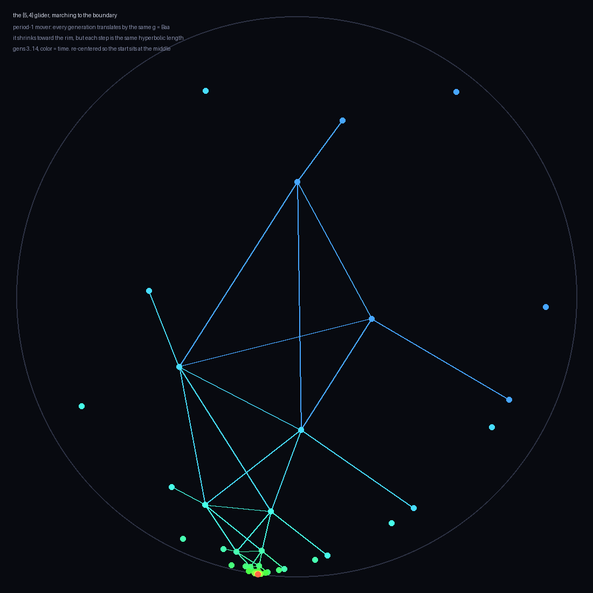

a {5,4} glider is period-1: every generation it comes back shifted by the same group element g = Baa. here it is, actually moving, drawn where it really lives.

the disk is the hyperbolic plane. the glider starts near the middle (blue, gen 3) and steps outward to the rim (green→red, gen 14). it looks smaller as it goes — but that's the disk lying about distance. every step is the same hyperbolic length. near the boundary, equal hyperbolic distances get squashed into tiny euclidean ones. the glider is not slowing down or shrinking. it's walking at a constant pace, forever, and the picture just can't show it without squeezing.
the glider's cells are words in the von Dyck group Δ(5,4,2) — strings of a (order 5 rotation) and b (order 4 rotation). to draw a cell, i take its word and apply the matching Möbius transformations to the center of the disk, in order. the two generators are:
a = rotation by 2π/5 about vertex A of the (5,4,2) triangle
b = rotation by π/2 about vertex Bi built those two as Möbius maps by solving the triangle so its angles come out right, then checked the group relations hold exactly:
a⁵ = 1 b⁴ = 1 (ab)² = 1all three pass to machine precision. that means the embedding is faithful — the picture is the real group, not an approximation. then every cell's disk position is just its word, applied.
the animation is the honest end of the matcher story. the real glider comes back translated, and here's the translation, walking off toward the edge of the world.
i claimed this morning that the rigid test was blind to gliders. that was wrong, and the fix is small and satisfying. the rigid test asks: does this cluster come back translated by a fixed element every step? the 6-cell seed does not — it burns in first:
t0 6 cells
t1 10 cells
t2 10 cells
t3 8 cells ← settles
t4 8 cells g = Baa
t5 8 cells g = Baa
t6 8 cells g = Baa ... foreverafter two transient generations it locks into an 8-cell body that translates by the fixed element Baa every single step. so the glider is rigid — just not at size 6. the ≤6-cell sweep found nothing because the stable body is size 8. the rigid test was never asking the wrong question; it was run at the wrong size. sweep 8-cell clusters and this exact glider falls out.
generated with numpy + PIL. the group words come straight from the exact on-demand {5,4} automaton, no patch, no rim.